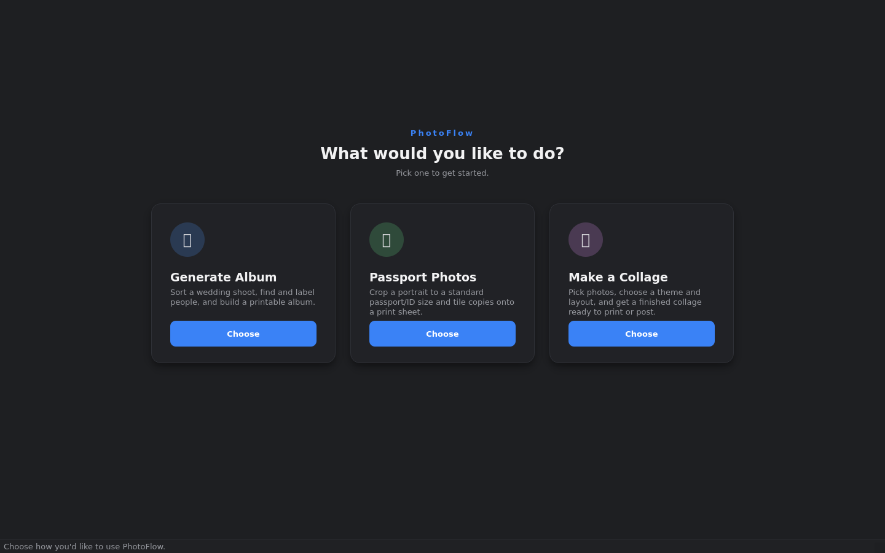

Features
Everything PhotoFlow does
Three tools in one application, all running locally on your own machine. This is the current beta feature set — anything still in progress is marked as such.
Mode one
Generate Album
The long job: turning thousands of raw frames into a finished album. PhotoFlow does the mechanical passes so you spend your time on the creative ones.
- Quality scoring — every frame is measured for sharpness, exposure and contrast, with sharpness measured on the face when there is one, so a sharp subject against a soft background isn't wrongly rejected.
- Duplicate and burst grouping — near-identical frames are grouped and the strongest one is picked as the representative.
- Face detection and person grouping — faces are found and clustered by person, so you can see who appears where and label them.
- Automatic spreads — photos are laid out into spreads using templates, with the layout responding to each photo's orientation.
- Themes and density — pick a look, and choose how many photos per spread from spacious to dense.
- Print export — output at full resolution for your lab.

Mode two
Passport & ID Photos
The everyday counter job. Built by watching how studios actually do it by hand, then removing the repetitive parts.
- Face-aware auto-crop — the crop centres on the detected face, and you can drag or resize it afterwards; the box stays locked to the correct aspect ratio.
- Standard and custom sizes — common passport and ID presets, or type any size in millimetres at 150, 300 or 600 dpi.
- Print sheets — tile copies onto 4×6, 5×7, 6×8, A4 or Letter, with adjustable margins and spacing.
- Several people on one sheet — put two or three different people on a single sheet, each with their own crop and copy count, instead of wasting a sheet per person.
- Cutting-guide borders — a thin outline around each photo so the lab knows where to cut.
- Optional face enhancement — skin smoothing, colour and brightness correction, background cleanup and subtle teeth/eye brightening, each on its own slider. Hold a button to compare against the original.
- Sheet preview — see the exact composited sheet before anything is exported.

Mode three
Collage Maker
Pick photos, pick a look, and a finished collage appears. Then adjust anything you want.
- Seven layouts — mosaic (cells follow each photo's shape), grid, feature, masonry columns, magazine, filmstrip and scattered prints. Or let it choose for you.
- Shape collages — fill a heart, circle, star, or any text or number, such as “25” for an anniversary.
- Six themes plus adjustable gaps, photo borders and rounded corners.
- Backgrounds — solid colour, gradient, your own image, or a blurred version of one of the photos.
- Titles and branding — add names and a date in your choice of font and position, and overlay your studio logo.
- Per-photo control — zoom, pan, rotate and filter any single photo, or apply one photo's treatment to all of them.
- Automatic photo picking — point it at a folder and it selects the best shots using the same quality scoring as the album tool, spread across the shoot so you don't get six frames from one burst.
- Print safety — warns you when a photo is too low-resolution for the size you've chosen, and can add bleed and trim marks for the lab.
- Saved presets — store your house style and apply it in one click.

Across the whole application
Faces are protected
Automatic cropping always checks where faces are before deciding what to discard.
Originals are never altered
PhotoFlow reads your files and writes new output. Your source photos are left exactly as they were.
Works offline
Processing happens on your computer, so client photos don't leave your studio.
Nothing metered
No per-image charges, whatever the size of the shoot.
Live previews
Previews render as you adjust, at screen resolution, with full quality reserved for export.
Every decision reversible
Automatic results are a starting point. Change a crop, a layout or an effect at any time.